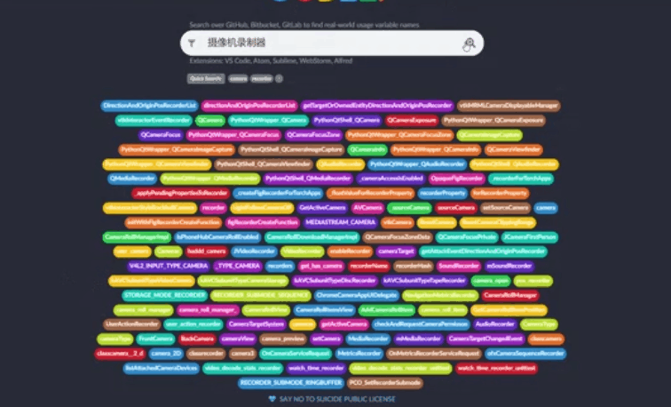
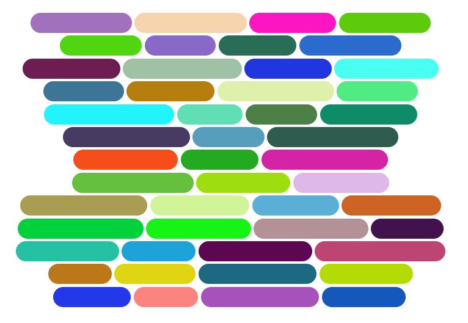
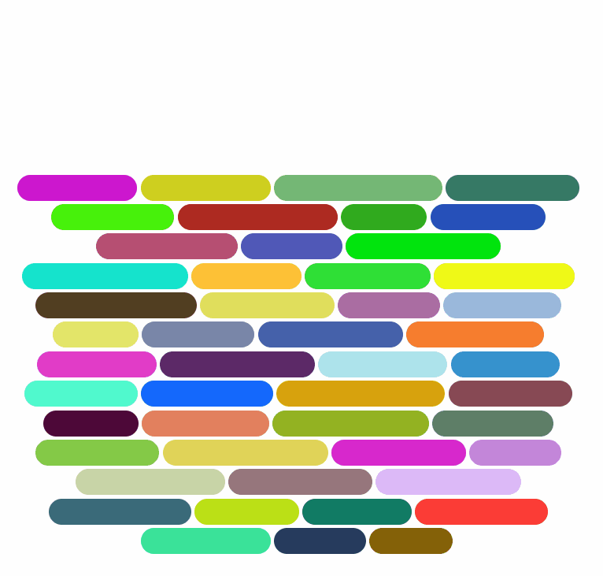
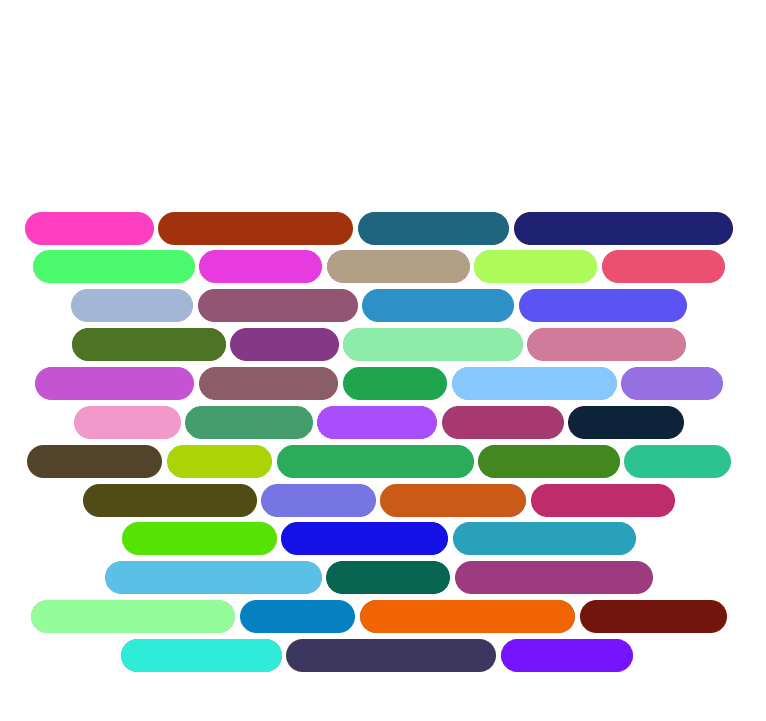

- 60 哪个 css 格式化工具是你的首选
- 59 CSS 选择器详解 12 个必知用法与最佳实践
- 58 动态视口单位之 dvh、svh、lvh
- 57 不规则造型按钮解决方案
- 56 不定宽文本溢出跑马灯效果完美解决方案
- 55 巧用 CSS 变量，实现动画函数复用
- 54 角向渐变的妙用
- 53 有趣的六芒星能力图动画
- 52 有意思的气泡 Loading 效果
- 51 CSS 原生支持的三角函数
- 50 有意思的网格下落加载效果
- 49 有意思的 Emoji 3D 表情切换效果
- 48 神奇的 3D 磨砂玻璃透视效果
- 47 抢先体验！超强大的 Anchor Positioning 锚点定位
- 46 CSS 也能实现碰撞检测
- 45 现代 CSS 解决方案 - 数学函数 Round
- 44 现代 CSS 解决方案 - 原生嵌套
- 43 神奇的背景，生化危机4日食 Loading 动画还原
- 42 当路径动画遇到滚动驱动
- 41 CSS 还原拉斯维加斯球数字动画
- 40 单标签下多色块随机文字随机颜色动画
- 39 CSS 也能实现 if 判断？实现动态高度下的不同样式展现
- 38 Flex 布局下居中溢出滚动截断问题
- 37 带圆角的虚线边框
- 36 现代 CSS 解决方案：文字颜色自动适配背景色
- 35 神奇的 3D 卡片反光闪烁动效
- 34 现代 CSS 解决方案：accent-color 强调色
- 33 巧用 has 和 drop-shadow 实现复杂布局效果
- 32 巧用 CSS + SVG 实现复杂线条光效动画
- 31 极具创意的鼠标交互动画
- 30 标准滚动条控制规范 scrollbar-color 和 scrollbar-width
- 29 类 ChatGpt 多行文本打字效果
- 28 神奇的卡片 Hover 效果与 Blur 的特性探究
- 27 渐变边框文字效果
- 26 巧妙使用多种方式实现单侧阴影
- 25 全尺寸的带圆角的渐变边框
- 24 开发中保证你用得到的 css 小技巧
- 23 您应该了解的 15 个有用的 CSS 属性
- 22 CSS 行元素的截断样式 box-decoration-break 属性
- 21 用 SASS 简化媒体查询
- 20 为什么你应该停止使用传统的 margin 和 padding 来设置 CSS 样式
- 19 sass 优化响应式布局代码
- 18 盘点 CSS 文本两端对齐的 N 种方式
- 17 如何修改滚动条的样式
- 16 CSS 模拟图片透明的棋盘背景
- 15 文本描边完美实现
- 14 你需要自定义 @property 而不是 CSS 变量的情况
- 13 从高度 0 过渡到自动高度
- 12 一些 css 语法解释
- 11 scss 日常用法
- 10 sass 指南
- 09 CSS 颜色设置透明度的新姿势
- 08 CSS 属性 appearance
- 07 CSS 动画性能优化
- 06 CSS 功能特性
- 05 CSS 中的 var() 函数
- 04 15 个你不知道的 CSS 属性
- 03 will-change
- 02 normalize.css 清除元素默认样式
- 01 纯 CSS 获取屏幕宽高
有意思的网格下落加载效果
HaoTian · 2024-12-18 16:34:35
最近，群友贴了一个非常有意思的动画效果，整体动画效果如下：
点击某个按钮后，触发一个动画效果，原本的网格内容，将按顺序（又带点随机的效果）从高处下落进行加载填充动画。
当然，我个人认为这个动画有点华而不实，主要体现在这个动画一次需要耗费较长时间，有点消磨人的耐心。不过确实一个很好的 CSS 动画教学案例。
而本文，就将具体去剖析这个动画，如果使用纯 CSS，应该如何实现。
还原布局结构
首先，我们需要大致还原布局结构，这个并非整个动画的核心。
整个动画的核心在于元素按顺序（又带点随机的效果）从高处下落渐次进行下落加载填充动画。
当然，还原这个布局也非常简单，这里我们借助 flex 布局快速实现，几个关键点：
- 每个 flex-item 宽度不固定：这一点可以使用 SASS 函数进行模拟，随机生成不同宽度的 flex-item
- 每个 flex-item 背景色随机：这一点同样也可以借助 SASS 函数 实现
- 整体水平居中：这个也简单，父容器添加
justify-content: center;即可
这样，整个布局的大致代码如下：
<ul>
<li></li>
<li></li>
// ... 假设一共 50 个 li
<li></li>
</ul>
$count: 51;
@function randomNum($max, $min: 0, $u: 1) {
@return ($min + random($max)) * $u;
}
@function randomColor() {
@return rgb(randomNum(255), randomNum(255), randomNum(255));
}
ul {
display: flex;
gap: 4px;
flex-direction: row;
flex-wrap: wrap;
justify-content: center;
width: 640px;
height: 420px;
}
li {
flex-shrink: 0;
height: 30px;
border-radius: 30px;
}
@for $i from 1 to $count {
li:nth-child(#{$i}) {
width: #{randomNum(110, 90)}px;
background: randomColor();
}
}
简单解释一下：
- 利用了 SASS 的循环函数简化代码量
- 实现了两个 SASS 函数，利用这两个函数随机生成不同宽度不同颜色的 li
randomNum()： 用于生成范围内的随机数randomColor()： 用于生成随机颜色值
这样，我们就可以快速得到这样一个布局效果：
下落动画
接下来，我们来实现元素的下落动画。
首先，我们撇开多元素的按顺序又带点随机的延迟下落，值聚焦于单个 item 的下落动画，它其实是这么个动画效果：

整个动画的核心步骤大致是：
- 默认是状态下，元素是在最终的 flex 布局状态下，且是可见状态
- 动画开始时，元素将消失，然后从上方，在一个缩小状态下，有一个小幅度向上运动
- 接着元素向下运动到目标位置（终止状态）
- 元素从缩小状态，放大为正常状态
- 并且，动画结束后，需要维持在最后一帧，因此需要使用（
animation-fill-mode: forwards）
对 CSS 动画细节和各个属性还不太了解的，建议你看看我的这本小册 -- CSS 技术揭秘与实战通关
完成上面的拆解后，单个动画实现起来就非常轻松了：
li {
opacity: 0;
&hover {
animation: falldown 1s forwards;
}
}
@keyframes falldown {
0% {
transform: translateY(-180px) scaleX(0.1) scaleY(0.3);
opacity: 1;
}
20% {
transform: translateY(-200px) scaleX(0.6) scaleY(0.3);
}
75% {
transform: translateY(0) scaleX(0.6) scaleY(0.3);
}
100% {
transform: translateY(0) scaleX(1) scaleY(1);
opacity: 1;
}
}
这样，我们就轻松的实现了单个的动画效果：
如果 50 个 item 同时作用这个动画，就是这样的效果：
实现延迟随机下落
当然，到这里，整个动画都还是平平无奇的。
我们需要最后的点睛之笔，实现按顺序又带点随机的延迟下落效果，以及让整体的动画更加自然。
这里的核心就在于：
- 利用
animation-delay制造延迟效果，但是不能是顺序延迟，需要带点随机效果 - 利用
animation-timing-function缓动函数，控制动画的速度曲线，使动画变化更为平滑 - 控制缩短每一个 item 的动画时长
方法明确了，剩下的就是调试动画效果了，最终，经过一番调试，完整的动画效果的代码就完成啦。
代码量真的不多：
$count: 51;
@function randomNum($max, $min: 0, $u: 1) {
@return ($min + random($max)) * $u;
}
@function randomColor() {
@return rgb(randomNum(255), randomNum(255), randomNum(255));
}
ul {
display: flex;
gap: 4px;
flex-direction: row;
flex-wrap: wrap;
justify-content: center;
width: 660px;
height: 420px;
}
li {
flex-shrink: 0;
height: 30px;
border-radius: 30px;
}
@for $i from 1 to $count {
li:nth-child(#{$i}) {
width: #{randomNum(110, 90)}px;
background: randomColor();
}
}
ul:hover {
li {
opacity: 0;
}
@for $i from 1 to $count {
li:nth-child(#{$i}) {
animation: falldown
0.3s
cubic-bezier(0.44, 0.02, 0.65, 1.3)
#{50 *
($count - $i) +
(random(150) - random(300))}ms
forwards;
}
}
}
@keyframes falldown {
0% {
transform: translateY(-180px) scaleX(0.1) scaleY(0.3);
opacity: 1;
}
20% {
transform: translateY(-200px) scaleX(0.6) scaleY(0.3);
}
75% {
transform: translateY(0) scaleX(0.6) scaleY(0.3);
}
100% {
transform: translateY(0) scaleX(1) scaleY(1);
opacity: 1;
}
}
核心，就在于这一句，animation: falldown .3s cubic-bezier(.44,.02,.65,1.3) #{50 * ($count - $i) + (random(150) - random(300))}ms forwards，需要好好的消化理解。
这样，我们就基本完美的复刻了原效果：
Gif 录制存在掉帧行为，原效果会比 GIF 录制出来的更好。完整的代码你可以戳这里：